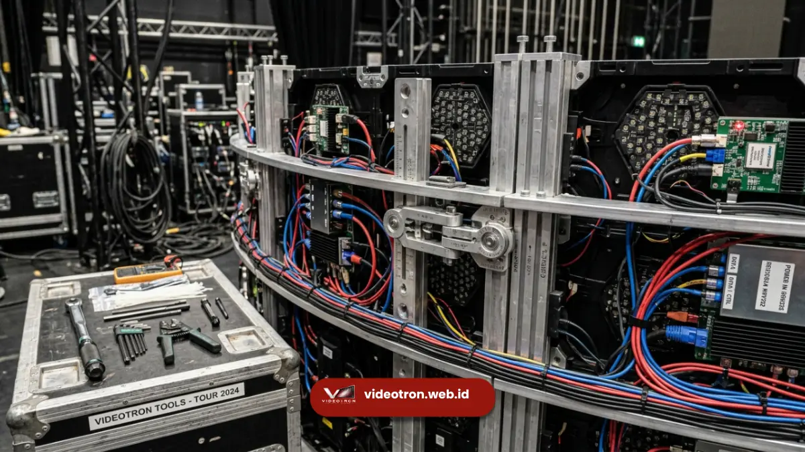

Kelebihan videotron curved untuk event terletak pada tampilan visual yang lebih imersif dan sudut pandang lebih luas, sementara kekurangannya berada pada biaya dan kompleksitas instalasi yang lebih tinggi dibanding videotron flat.
Mengetahui keunggulan dan batasan teknisnya akan membantu event organizer maupun penanggung jawab acara mengambil keputusan terbaik sesuai skala dan anggaran acara.
Poin Penting Videotron Curved Event:
- Videotron curved unggul dalam menciptakan kesan premium dan pengalaman visual yang menyatu dengan panggung.
- Kekurangan utama videotron curved adalah biaya sewa dan waktu persiapan yang lebih besar.
- Pemilihan videotron curved sebaiknya disesuaikan dengan konsep acara dan anggaran yang tersedia.
- Videotron curved lebih cocok untuk momen puncak acara dibanding penggunaan sepanjang acara secara penuh.
- 1. Apa Saja Kelebihan Videotron Curved untuk Event?
- 2. Apa Saja Kekurangan Videotron Curved yang Perlu Dipertimbangkan?
- 3. Kapan Sebaiknya Event Menggunakan Videotron Curved?
- 4. Bagaimana Videotron Curved Memengaruhi Pengalaman Fotografi dan Dokumentasi Acara?
- 5. Bagaimana Menyeimbangkan Kelebihan dan Kekurangan Videotron Curved?
- 6. Bagaimana Membandingkan Biaya dan Manfaat Videotron Curved Secara Objektif?
Apa Saja Kelebihan Videotron Curved untuk Event?
Kelebihan utama videotron curved untuk event adalah kemampuannya menciptakan pengalaman visual yang lebih imersif dengan sudut pandang audiens yang lebih luas dibanding videotron flat konvensional.
Sebagai solusi panggung kelas atas, penerapan videotron curved event mampu meningkatkan daya tarik acara secara menyeluruh.
Beberapa kelebihan lain yang umum dirasakan:
- Memberikan kesan premium dan modern yang mendukung citra brand pada acara berskala korporat.
- Menyatu secara visual dengan panggung berbentuk arena, catwalk, atau booth melingkar.
- Mendukung konten kreatif seperti animasi 3D dan efek kedalaman yang sulit ditampilkan pada layar datar.
- Meningkatkan daya tarik visual sehingga momen acara lebih berpotensi diabadikan dan dibagikan oleh audiens.
- Fleksibel dibentuk sesuai kebutuhan desain panggung, baik convex, concave, maupun kombinasi wave.
Kelebihan-kelebihan ini menjadikan videotron curved pilihan populer untuk segmen acara yang mengutamakan kesan visual sebagai bagian dari pengalaman audiens.
Apa Saja Kekurangan Videotron Curved yang Perlu Dipertimbangkan?
Kekurangan utama videotron curved terletak pada biaya sewa yang lebih tinggi dan proses instalasi yang lebih kompleks dibanding videotron flat pada umumnya.
Beberapa kekurangan lain yang perlu dipertimbangkan:
- Waktu load-in dan rigging lebih panjang karena membutuhkan perhitungan radius dan struktur truss custom.
- Membutuhkan vendor dengan pengalaman khusus pada instalasi curved, sehingga pilihan vendor lebih terbatas.
- Proses mapping konten menambah tahapan kerja bagi tim kreatif dan teknis sebelum acara berlangsung.
- Risiko kendala teknis lebih besar apabila radius lengkungan tidak dihitung dengan tepat sejak awal perencanaan.
Kekurangan ini bukan berarti videotron curved tidak layak digunakan, namun perlu dipertimbangkan secara matang dalam perencanaan anggaran dan jadwal persiapan acara.

Kompleksitas instalasi dan kebutuhan rigging custom membutuhkan waktu setup lebih lama dibanding layar flat standar.Kapan Sebaiknya Event Menggunakan Videotron Curved?
Videotron curved sebaiknya digunakan pada momen acara yang mengutamakan kesan visual kuat, seperti sesi keynote, product reveal, atau segmen hiburan utama yang menjadi pusat perhatian audiens.
Beberapa situasi yang cocok menggunakan videotron curved:
- Acara product launch yang ingin menonjolkan kesan inovatif dan modern melalui visual panggung.
- Gala dinner korporat yang membutuhkan suasana mewah dan berkelas.
- Konser atau pertunjukan musik dengan panggung berbentuk arena atau catwalk.
- Booth pameran dagang yang ingin tampil beda dari booth kompetitor di sekitarnya.
Sebaliknya, untuk acara dengan anggaran terbatas atau kebutuhan informasi sederhana seperti signage arahan atau live streaming standar, videotron flat umumnya sudah cukup memadai tanpa perlu kompleksitas tambahan dari bentuk lengkung.
Bagaimana Videotron Curved Memengaruhi Pengalaman Fotografi dan Dokumentasi Acara?
Videotron curved cenderung menghasilkan dokumentasi foto dan video yang lebih menarik karena bentuk lengkungannya menciptakan komposisi visual yang lebih dinamis dibanding layar datar konvensional.
Sudut lengkung pada layar membantu fotografer dan videografer mendapatkan sudut pengambilan gambar yang lebih variatif, terutama saat menangkap momen panggung dari sisi kiri, kanan, maupun tengah audiens.
Efek ini turut mendukung kebutuhan dokumentasi acara korporat yang sering digunakan kembali untuk materi promosi, media sosial, atau laporan internal perusahaan setelah acara berlangsung.
Bagaimana Menyeimbangkan Kelebihan dan Kekurangan Videotron Curved?
Menyeimbangkan kelebihan dan kekurangan videotron curved dapat dilakukan dengan menyesuaikan penggunaannya hanya pada segmen acara tertentu, bukan sepanjang acara secara penuh, untuk mengoptimalkan anggaran.
Pendekatan ini banyak dipakai oleh event organizer berpengalaman, misalnya menggunakan videotron curved khusus untuk backdrop panggung utama saat sesi keynote atau product reveal, sementara area lain seperti signage arah atau informasi tetap menggunakan videotron flat yang lebih ekonomis.
Dengan strategi ini, kesan visual premium tetap didapat tanpa membebani anggaran acara secara keseluruhan.
Bagaimana Membandingkan Biaya dan Manfaat Videotron Curved Secara Objektif?
Membandingkan biaya dan manfaat videotron curved secara objektif dapat dilakukan dengan menilai apakah efek visual imersif yang dihasilkan sepadan dengan tujuan komunikasi acara dan anggaran yang tersedia.
Beberapa pertanyaan yang dapat membantu proses evaluasi ini:
- Apakah momen acara membutuhkan efek visual yang kuat untuk mendukung pesan brand, atau cukup dengan tampilan visual standar?
- Apakah anggaran acara masih memungkinkan tambahan biaya untuk instalasi dan mapping konten videotron curved?
- Apakah venue memiliki waktu load-in yang cukup untuk mengakomodasi proses instalasi yang lebih kompleks?
- Apakah tim kreatif memiliki kapasitas untuk menyiapkan konten visual yang sesuai dengan bentuk layar melengkung?
Jika sebagian besar jawaban mendukung penggunaan videotron curved, maka investasi tambahan pada biaya dan waktu persiapan umumnya sepadan dengan peningkatan kesan visual yang didapat, terutama untuk acara yang mengutamakan citra brand premium.
Videotron curved menawarkan kelebihan berupa pengalaman visual yang lebih imersif dan kesan premium, namun disertai kekurangan pada sisi biaya dan kompleksitas instalasi. Keputusan menggunakan videotron curved sebaiknya mempertimbangkan konsep acara, anggaran, serta momen spesifik yang ingin ditonjolkan dalam rangkaian acara.
Dapatkan panduan pemilihan dan penawaran sewa layar LED terbaik bersama tim ahli kami di videotron.web.id sekarang juga.

Hawa Nadira
LED Technology Consultant dan Visual Educator
Konsultan dan spesialis solusi display digital berdedikasi tinggi yang fokus membagikan panduan edukatif mengenai penerapan teknologi layar LED videotron untuk kebutuhan interior modern di Indonesia.